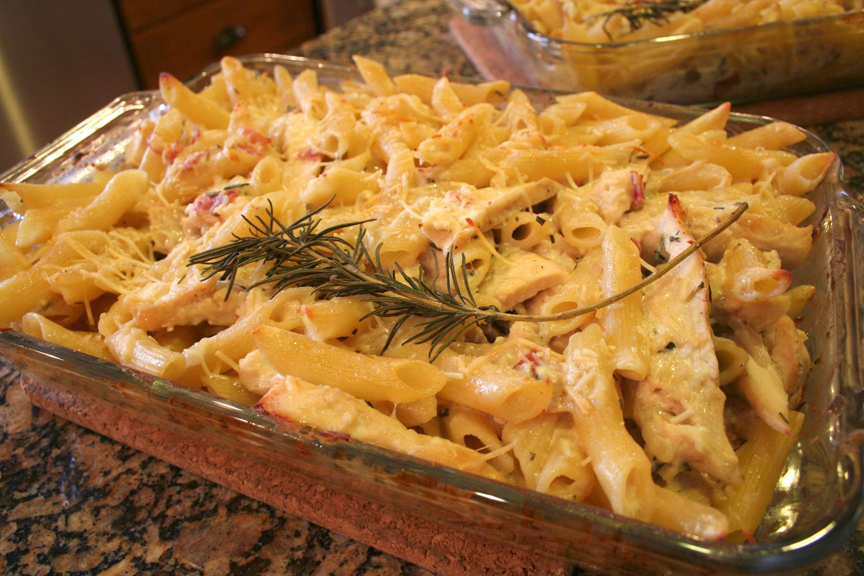

View My Mom's Chicken Noodle Recipe ↓
- 4 boneless, skinless chicken breasts, boiled and shredded
- 8-12 cups water with 8-12 chicken bouillon cubes (1 cube per cup of water)
- 1 onion, chopped
- 3-5 carrots, peeled & chopped
- 3-4 stalks chopped
- 1-2 teaspoons dried parsley
- 2 regular size cans cream of Campbell's chicken soup
- About 8 oz. homemade style egg noodles
- 1. If I have plenty of time, I cook my chicken covered with water in the same Dutch oven that I will be cooking the soup in (saves washing a pan). If I am in a rush, I start the chicken cooking in one pan and put the water and bouillon in the soup pan to start cooking.
- 2. Then I start chopping the vegetables and toss them in the water and bouillon as I chop.
- 3. Let that simmer away while you use another pan to cook the noodles by themselves according to the package directions. I would cook them for the shorter time recommended on the package (like mine says “18-28 minutes” so I do 18 minutes, since you will be adding them to the soup and sometimes it gets warmed up a few times to eat.) Drain the noodles.
- 4. Add the cream of chicken soup to the veggie/broth mixture.
- 5. Add the parsley till it looks pretty.
- 6. By this time, your chicken should be done and easy to shred. Drain the pieces on a cutting board and either chop into chunks or shred with a fork.
- 7. Add the chicken, add the noodles and voila! Yummy supper!
- Sure hope you enjoy this and everybody thinks you are a gourmet cook even though it is easy peasy!
Who doesn't love a deviled egg?! I updated these by adding both mustard and mayo to the egg yolks, and finely chopped celery. Garnish with a celery leaf to make it look fancy.
View Fresh Pasta Stir Fry Details ↓
I still remember the day my Aunt Kathy made this meal for my family and introduced me to fresh basil. It is a simple dish.
- 1.Start with olive oil, garlic and onions to saute.
- 2.Then you add lots of fresh tomatoes and let it simmer for a bit.
- 3.Then tear some fresh basil leaves, parsley, and oregano to add to the mixture. Sprinkle with parmesan on top of angel hair pasta.

This is my home made version of my mom's favorite dish at Macaroni Grill, penne rustica. I don't have the exact recipe I used, but this one looks fairly close. In my opinion, anything baked with rosemary is a wonderful thing!
The Pizza Factory is a family favorite, especially their breadsticks that are wrapped on a wooden stick while baked. Here is a recipe to get the step-by-step instructions.
Cooking for one can be a challenge, but a family friend taught me a great trick for cooking tilapia. I buy individually sealed frozen filets, and when I am ready to eat one, I spray pam into a quart sized ziploc bag. I place the filet in the bag and season with lemon pepper, herbs, and lemon juice. All you have to do is pop it in the microwave for about 5 minutes, making sure to not let it overcook (as the fish gets very tough).
As a side, I like to steam green beans and broccolini and roast red potatoes with olive oil in the oven.
View Tomato Basil Soup Details ↓
Come late August, my parent's garden is overgrown with many tomato and basil plants. So this has become a favorite of mine to make. I love Ina Garten's (Barefoot Contessa) recipe for creamy tomato basil soup. Her directions include putting the soup through a food mill, but I prefer mine to be chunky. Serve with a baguette for dipping!
This is just a fast stir fry. I fried up some chicken and zucchini, squash, tomatoes, and green pepper from the home garden. It is served over rice and topped with a Hawaiian soy sauce.